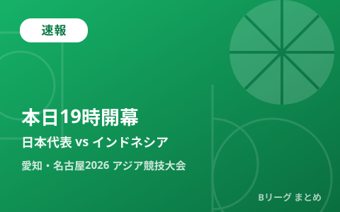

【愛知・名古屋2026】バスケ男子日本代表、本日19時インドネシア戦で開幕 グループAは韓国・サウジアラビアと同組

第20回アジア競技大会（愛知・名古屋2026）のバスケットボール競技が本日9月10日、愛知国際アリーナ（IGアリーナ）で開幕します。男子日本代表は大韓民国・サウジアラビア・インドネシアと同居するグループAに入っており、初戦の相手はインドネシア。日本時間19時にティップオフを迎えます。8月に若手中心のメンバーで始動した代表チームにとって、いよいよ本番の舞台です。
グループAは韓国・サウジアラビア・インドネシアと同組
8月に発表された組み合わせ抽選で、男子日本代表はグループAに入り、大韓民国、サウジアラビア、インドネシアと対戦することが決まりました。地元開催という利点はあるものの、アジアの強豪である韓国との対戦も控える厳しい組み合わせです。グループステージを突破できるかどうかは、初戦のインドネシア戦でしっかり勝利し、勢いをつけられるかが大きな鍵になります。
本日19時、インドネシアとの初戦
男子バスケットボール競技は9月10日から20日にかけて、愛知国際アリーナ（IGアリーナ）を舞台に行われます。日本の初戦は本日19時に行われるインドネシア戦。8月上旬の直前合宿を経て招集された代表メンバーにとって、公式戦としては初の実戦となります。
| 日程 | 対戦カード | 時刻（日本時間） |
|---|---|---|
| 9月10日（木） | 日本 vs インドネシア | 19:00 |
| 9月11日（金） | 日本 vs サウジアラビア | 19:00 |
| 9月13日（日） | 日本 vs 大韓民国 | 19:00 |
招集メンバー12名、吉本泰輔HCが指揮
今大会の男子日本代表は12名で編成され、指揮を執るのは吉本泰輔ヘッドコーチ（HC）です。8月にはアレックス・カーク、シェーファー アヴィ 幸樹、川島悠翔、山﨑一渉ら若手中心のメンバーで始動しており、当サイトでもアジア大会に臨む若手中心メンバーの記事で紹介した通り、桶谷大HCが全体を統括しつつ、吉本HCが指揮を執る体制で強化を進めてきました。ワールドカップ組を中心とするA代表とは別枠ながら、「育成ではなく強化の場」と位置づけられた真剣勝負が、いよいよ本日開幕します。
見どころ
初戦の相手インドネシアは自国開催組ではないものの、東南アジアの中では実力のあるチームです。日本は地元開催の後押しを受けつつ、川島悠翔や山﨑一渉ら若手がどこまで存在感を発揮できるかが注目点。グループステージを突破すれば、決勝トーナメントで金メダル獲得を目指す戦いが続きます。当サイトでは試合結果が判明次第、続報をお届けします。
Q. アジア競技大会のバスケットボール競技はどんな仕組み？
A. 男女ともグループステージを経て決勝トーナメントに進む方式です。男子はグループA・グループBに分かれてグループステージを戦い、上位チームが決勝トーナメントに進出します。詳細なレギュレーションは大会公式サイトでご確認ください。
出典：バスケットボールキング「男子アジア大会の組み合わせ決定…日本は韓国、サウジアラビア、インドネシアと同組に」／公益財団法人日本バスケットボール協会「バスケットボール男子日本代表チーム『第20回アジア競技大会（2026／愛知・名古屋）』直前合宿および大会招集メンバー」ほか
https://basketballking.jp/news/japan/20260812/627587.html
https://www.japanbasketball.jp/japan/89525